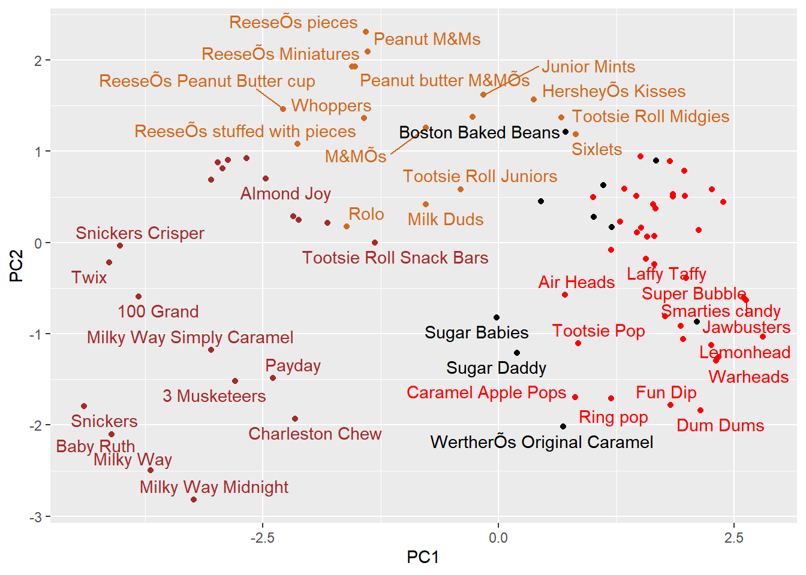

Q9. Is the distribution of winpercent values symmetrical? Answer: The distribution of winpercent is not symmetric #The centre is the highest point Q10. Is the center of the distribution above or below 50%? Answer:The centre of distribution is below 50% Q11. On average is chocolate candy higher or lower ranked than fruit candy? Answer:The chocolate candy is higher ranked than fruit candy
Q12. Is this difference statistically significant? Answer: There is significant different which means chocolate is better than fruiti
t.test(chocolate.win, fruiti.win)
Welch Two Sample t-test
data: chocolate.win and fruiti.win
t = 6.2582, df = 68.882, p-value = 2.871e-08
alternative hypothesis: true difference in means is not equal to 0
95 percent confidence interval:
11.44563 22.15795
sample estimates:
mean of x mean of y
60.92153 44.11974
Overall candy rating
The base R sort() and order functions are very useful
x <-c(5,1,2,6)sort(x, decreasing = T)
[1] 6 5 2 1
x[order(x)]
[1] 1 2 5 6
y <-c("berry", "alice", "chandra")y
[1] "berry" "alice" "chandra"
sort(y)
[1] "alice" "berry" "chandra"
order(y)
[1] 2 1 3
Q13. What are the five least liked candy types in this set? First, I want to order/manage the whole dataset by winpercent values
#Barplot The default barplot, made with geom_col has the bars in the order they are in the dataset Q15. Make a first barplot of candy ranking based on winpercent values.
Time to add some useful color Let’s setup a color vector (that signifies candy type) that we can then use for some future plots. We start by making a vector of all black values (one for each candy). Then we overwrite chocolate (for chocolate candy), brown (for candy bars) and red (for fruity candy) values.
This plot sucks! I cannot read the labels…. We can use ggrepl package to help with this
library(ggrepel)# How about a plot of price vs winggplot(candy) +aes(winpercent, pricepercent, label=rownames(candy)) +geom_point(col=my_cols) +geom_text_repel(col=my_cols, size=3.3, max.overlaps =7)
Warning: ggrepel: 38 unlabeled data points (too many overlaps). Consider
increasing max.overlaps
I will make a “nicer” plot with ggplot. ggplot only works with data.frames as input so I need to make one for it first
# Make a new data-frame with our PCA results and candy datamy_data <-cbind(candy, pca$x[,1:3])
p <-ggplot(my_data) +aes(PC1, PC2, label=rownames(my_data)) +geom_point(col=my_cols) +geom_text_repel(col=my_cols, max.overlaps =7)p
Warning: ggrepel: 41 unlabeled data points (too many overlaps). Consider
increasing max.overlaps

library(plotly)
Attaching package: 'plotly'
The following object is masked from 'package:ggplot2':
last_plot
The following object is masked from 'package:stats':
filter
The following object is masked from 'package:graphics':
layout
ggplotly(p)
Warning in geom2trace.default(dots[[1L]][[1L]], dots[[2L]][[1L]], dots[[3L]][[1L]]): geom_GeomTextRepel() has yet to be implemented in plotly.
If you'd like to see this geom implemented,
Please open an issue with your example code at
https://github.com/ropensci/plotly/issues